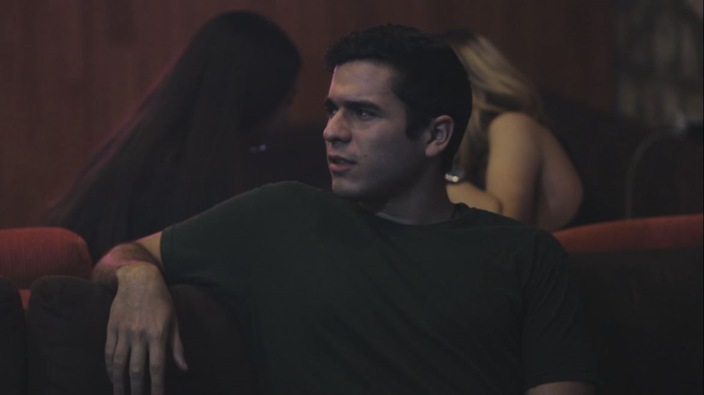

Resumen
La vida de un hombre cambia por completo al momento de entrar a una taberna de perdición llamada ‘’El Rebaño’’, el cual
es dirigido por un misterioso hombre del que nadie sabe nada. La noche en que sus amigos sacan a Carlos de su casa para
una salida de ‘’bienvenida’’, terminan llegando al recinto y luego a raíz de una broma que le hacen, conoce a una joven
llamada Paris.
Él descubre uno de los más grandes secretos de esta joven mientras le hace un baile, y atormentado acerca de sus sentimientos
se da cuenta de que su vida es aburrida así que empieza a acudir más seguido a El Rebaño buscando esas experiencias
que sintió aquella noche, acercándose cada vez más sin saberlo a Paris y a su turbulento mundo, con el peligro de que
su secreto se revele.
Personajes

Carlos Velásquez
22 años
Piel canela, cabello corto al estilo militar, alto y de condición física impecable.
Un guardia con familia de linaje militar, aficionado a las armas desde joven, que se graduó de la academia y fue a servir
en la frontera durante 6 meses hasta que llegó recientemente. Está comprometido con su novia del liceo la cual le exige
mucho de sí mismo y quiere formar una familia prematuramente. Nunca tuvo una vida muy emocionante.
Paris
25 Años
De piel blanca, peluca corta y de color castaño, alta y de figura esbelta.
París es la favorita de todos y el rostro más conocido en ‘’El Rebaño’’, no suele hablar nunca con los clientes pero
sus espectáculos son los más vistos. Todos la conocen pero nadie sabe quién es, al correrse la voz que le dirigía la
palabra a un nuevo cliente llamado Carlos, El Padre hierve de celos pero ella sabe cómo mantenerlo al límite debido
a que ‘’no es como las demás chicas’’ y de manera casi maternal vela por la seguridad de la mayoría de las que trabajan
allí, especialmente por Tokyo. Buscará unas salida de ese lugar y puede que Carlos sea la respuesta.
El Padre
28 años
Piel blanca, barba larga y negra, sonrisa incomoda a la vista, utiliza un traje muy elegante.
Poco se sabe de él, es un sujeto muy carismático y misterioso, siempre está al tanto de lo que le ocurre dentro de su
local incluso si la gente no lo sabe. Tiene un cierto aura que hace que las personas en la habitación sientan respeto
por él y cuando dice algo TODOS lo escuchan. Siempre podemos encontrarle en una esquina oscura del local observando
a las chicas, aunque su favorita por supuesto es Paris.
Tokyo
23 años
Es una hermosa chica de cabello largo y ojos claros que comparada con las demás trabajadoras de ‘’El Rebaño’’, no es
tan solicitada como Paris…
Inicia trabajando en ese lugar, pues le pareció una buena manera de hacer dinero fácil mientras esperaba los resultados
de ingreso de la universidad, pero todo el ambiente y aún más, El Padre, hace que se arrepienta de haber entrado en
ese negocio…
Contacto